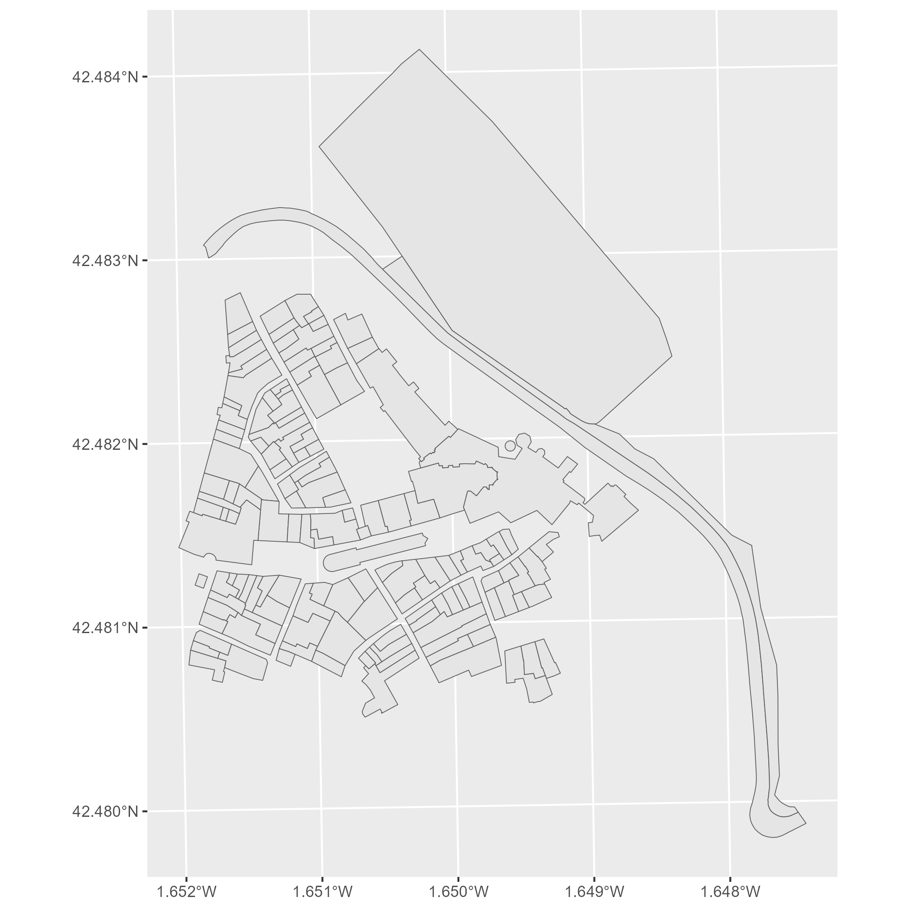

CatastRoNav.RmdCatastRoNav is a package that provide access to different INSPIRE API services of the Cadastre of Navarre. With CatastRoNav it is possible to download spatial objects as buildings or cadastral parcels.
The INSPIRE Directive aims to create a European Union spatial data infrastructure for the purposes of EU environmental policies and policies or activities which may have an impact on the environment. This European Spatial Data Infrastructure will enable the sharing of environmental spatial information among public sector organisations, facilitate public access to spatial information across Europe and assist in policy-making across boundaries.
The implementation of the INSPIRE directive on the Cadastre of Navarre allows to retrieve spatial objects from the database of the cadastre:
?sf).On this example we would retrieve the cadastral parcels of Olite:
library(CatastRoNav)
# For getting coords
library(sf)
library(mapSpain)
# Data wrangling and visualization
library(dplyr)
library(ggplot2)
olite <- esp_get_capimun(munic = "Olite") %>%
st_transform(25830) %>%
# Small buffer of 100 m
st_buffer(100)
cp <- catrnav_wfs_get_parcels_bbox(olite)
ggplot(cp) +
geom_sf()
We can create also thematic maps using the information available on the spatial objects. We would produce a visualization of the urban growth of Pamplona using CatastRoNav, replicating the map produced by Dominic Royé on his post Visualize urban growth.
In first place, we extract the coordinates of the city center of Pamplona using mapSpain:
# Use mapSpain for getting the coords
pamp <- esp_get_capimun(munic = "^Pamplona")
# Transform to ETRS89 / UTM 30 N and add a buffer of 1000m
pamp_buff <- pamp %>%
st_transform(25830) %>%
st_buffer(1000)Next step consists on extracting the buildings using the WFS service:
pamp_bu <- catrnav_wfs_get_buildings_bbox(pamp_buff)Next step for creating the visualization is to crop the buildings to the buffer we created before:
# Cut buildings
dataviz <- st_intersection(pamp_bu, pamp_buff)
#> Error in UseMethod("st_intersection"): no applicable method for 'st_intersection' applied to an object of class "NULL"
ggplot(dataviz) +
geom_sf()
#> Error in ggplot(dataviz): object 'dataviz' not foundLet’s extract now the construction year, available in the column beginning:
# Extract 4 initial positions
year <- substr(dataviz$beginning, 1, 4)
#> Error in substr(dataviz$beginning, 1, 4): object 'dataviz' not found
# Replace all that doesn't look as a number with 0000
year[!(year %in% 0:2500)] <- "0000"
#> Error in year[!(year %in% 0:2500)] <- "0000": object 'year' not found
# To numeric
year <- as.integer(year)
#> Error in eval(expr, envir, enclos): object 'year' not found
# New column
dataviz <- dataviz %>%
mutate(year = year)
#> Error in mutate(., year = year): object 'dataviz' not foundLast step is to create groups based on the year and create the data visualization. We use here the function ggplot2::cut_width() to create different classes:
dataviz <- dataviz %>%
mutate(year_cat = ggplot2::cut_width(year,
width = 10
))
#> Error in mutate(., year_cat = ggplot2::cut_width(year, width = 10)): object 'dataviz' not found
# Adjust the color palette
dataviz_pal <- hcl.colors(
length(levels(dataviz$year_cat)),
"Spectral"
)
#> Error in levels(dataviz$year_cat): object 'dataviz' not found
ggplot(dataviz) +
geom_sf(aes(fill = year_cat), color = NA) +
scale_fill_manual(values = dataviz_pal) +
theme_void() +
labs(title = "PAMPLONA", fill = "") +
theme(
panel.background = element_rect(fill = "black"),
plot.background = element_rect(fill = "black"),
legend.justification = .5,
legend.text = element_text(
colour = "white",
size = 12
),
plot.title = element_text(
colour = "white", hjust = .5,
margin = margin(t = 30),
size = 30
),
plot.caption = element_text(
colour = "white",
margin = margin(b = 20), hjust = .5
),
plot.margin = margin(r = 40, l = 40)
)
#> Error in ggplot(dataviz): object 'dataviz' not found